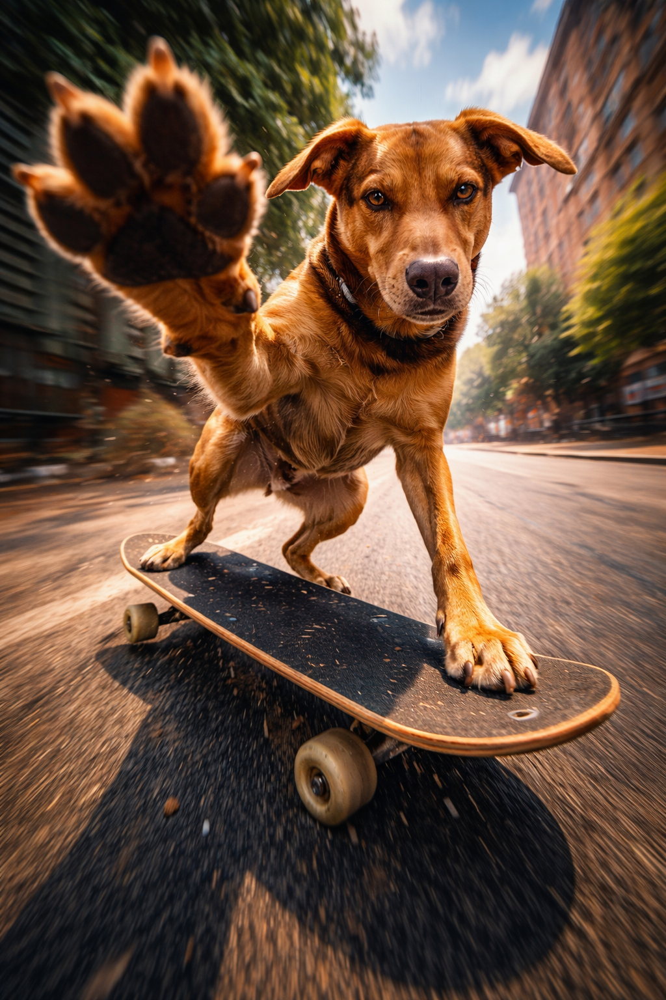

🔥 Kein Zauber. Nur Struktur.
Wir zerlegen einen Prompt in klare Bausteine – und zeigen,
was passiert, wenn du genau eine Stelle änderst.
Ziel: Du sollst Prompts nicht „glauben“, sondern verstehen.
Du kannst danach denselben Aufbau auf eigene Ideen übertragen.
Tipp: Du brauchst nicht „kreativ“ zu sein. Ändere nur ein Wort – und beobachte den Effekt.
Beispielprompt: Skateboard
Das ist der Ausgangspunkt. Von hier aus ändern wir gezielt einzelne Bausteine.
🧾ORIGINAL PROMPT
Ultra-detailed cinematic action scene.
The dog from the reference photo is captured mid-air while skateboarding.
Reproduce its natural fur colors, markings, and body features exactly as in the reference photo.
Do not add a collar or harness. The fur should appear glossy and highly detailed.
– Camera angle: Low-angle fisheye perspective, extreme dramatic distortion.
– One exaggerated paw reaches forward into the extreme foreground, as if giving a high-five.
– All other paws are placed firmly on the skateboard.
– The skateboard is tilted mid-trick, dynamic and realistic.
Background: Urban street environment with motion blur.
Lighting: Epic cinematic lighting.
Visual style: analog film grain, gritty, energetic.
Constraints:
– Natural anatomy
– No accessories besides skateboard
– Strong focus on movement & intensity.
Hinweis: Das Referenzfoto ist der „Identity Anchor“. Der Rest ist Szene/Styling.

Original Output (assets/…/original.PNG)Referenz Foto
lückenfüller text
Block 1: Identität (Referenzfoto)
Dieser Block sorgt dafür, dass es dein Tier bleibt – und nicht irgendein generischer Hund.
Identity Transfer
Die wichtigste Regel: „Wie auf dem Referenzfoto“ – klar und wiederholt.
Prompt-Ausschnitt
The dog from the reference photo is captured mid-air while skateboarding.
Reproduce its natural fur colors, markings, and body features exactly as in the reference photo.
Was macht das?
Verankert Fellfarben, Muster, Proportionen und den „Look“ am Referenzfoto.
Ohne diesen Block driftet das Ergebnis schnell zu „Random Dog“.
Typische Anpassungen
„dog“ → „animal“ (für jedes Tier)
„captured mid-air“ → „standing / sitting“
mehr Details zu Fell/Markings (wenn nötig)
Risiko
Zu viel Zusatzbeschreibung kann das Referenzfoto „überschreiben“.
Besser: kurz + eindeutig + wiederholbar.
Original (Referenz stark)Variante: Identity zu schwach (identity_weak.jpg)
Block 2: Kamera / Lens
Kamera ist ein „Look-Schalter“. Fisheye wirkt krass – aber ist fehleranfälliger.
Fisheye vs. realistischer Look
Ein einzelner Satz verändert die gesamte Bildphysik.
Prompt-Ausschnitt (original)
– Camera angle: Low-angle fisheye perspective, extreme dramatic distortion.
Was macht das?
Fisheye verstärkt Dynamik durch Verzerrung: Vordergrund riesig, Background gebogen.
Stark für Action – riskant für Anatomie.
Alternative (copy)
– Camera angle: 35mm documentary photo, low-angle, no distortion.
Action entsteht durch klare Körperlogik: Was macht welche Pfote – und warum?
Paw / Trick / Board
Je genauer die Pose, desto weniger Drift – aber: nicht überladen.
Prompt-Ausschnitt (original)
– One exaggerated paw reaches forward into the extreme foreground, as if giving a high-five.
– All other paws are placed firmly on the skateboard.
– The skateboard is tilted mid-trick, dynamic and realistic.
Was macht das?
Erzwingt eine „Story Pose“ (High-five) + Stabilität (andere Pfoten am Board).
Das gibt Bewegung und Fokus.
Alternative (cleaner)
– The dog stands naturally on the skateboard.
– ALL FOUR paws are placed firmly on the deck at the same time.
– Each paw has visible contact with the board surface.
– No lifted paws, no jumping, no exaggerated gestures.
– Balanced stance, natural weight distribution.
Constraints:
– Natural anatomy, correct paws count
– No collar, no harness, no extra accessories
– Only skateboard as prop
– Keep fur markings identical to reference
Minimal-Regel für Lernfortschritt: Immer nur 1 Block ändern, dann vergleichen.
Nächste Schritte
Wenn dieses Beispiel sitzt, kopieren wir das Pattern auf einen zweiten Prompt (z.B. Portrait/Regen).
✅CHECKLIST
1) Lege 7 Bilder ab:
- original.jpg
- identity_weak.jpg
- cam_35mm.jpg
- pose_natural.jpg
- bg_skatepark.jpg
- light_day.jpg
- style_clean.jpg
- (optional) constraints_strict.jpg
2) Passe nur die Dateinamen an (wenn du anders benennst).
3) Teste Mobile:
- lädt schnell?
- Text lesbar?
- Copy Button ok?
# Das PDF-Handbuch kann später 1:1 aus dieser Seite entstehen.